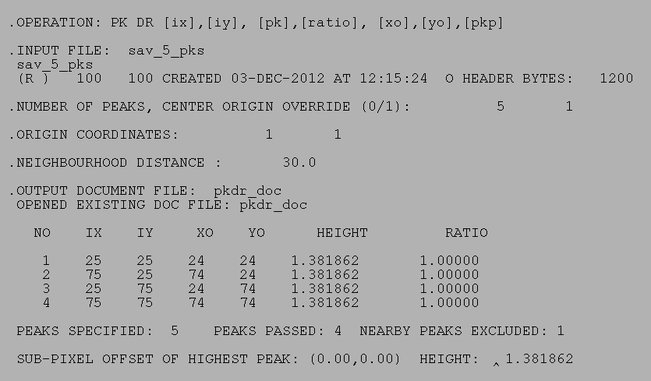
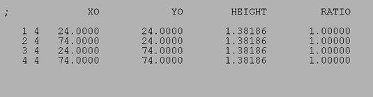

| .OPERATION: | PK DR [ix],[iy], [pk],[ratio], [xo],[yo], [pkp] | ; Search for highest peaks in image |
| .INPUT FILE: | sav_5_pks | ; Image (input) |
| .NUMBER OF PEAKS, CENTER ORIGIN OVERRIDE (0/1): | 5, 1 | ; Want 5 highest peaks, center over-ride |
| .NEW ORIGIN COORDINATES: | 1, 1 | ; Origin |
| .NEIGHBOURHOOD EXCLUSION DISTANCE: | 30 | ; Ignore lower peaks within 30 pixels |
| .DOCUMENT FILE: | pkdr_doc | ; Image (input) |
| INPUT IMAGE |
|---|
| sav_5_pks |
| RESULTS FILE |
|---|
|  |
| pkdr_resu |
| OUTPUT DOC FILE |
|---|
|  |
| pkdr_doc |